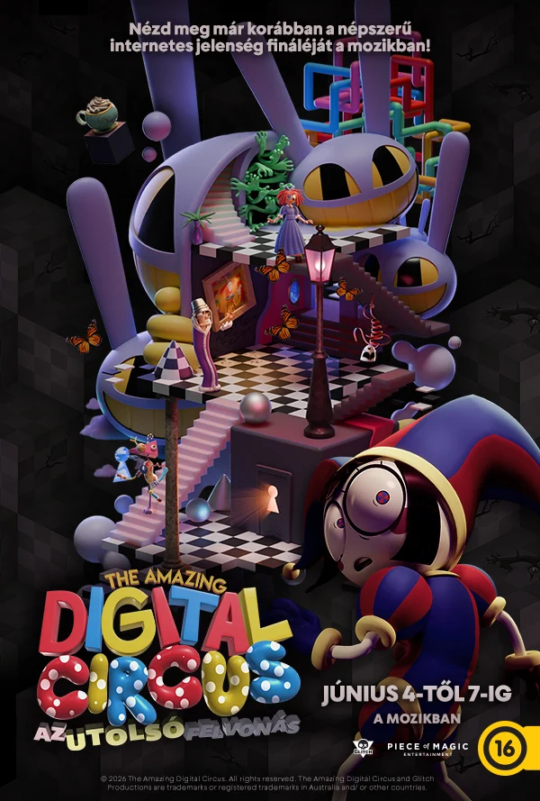
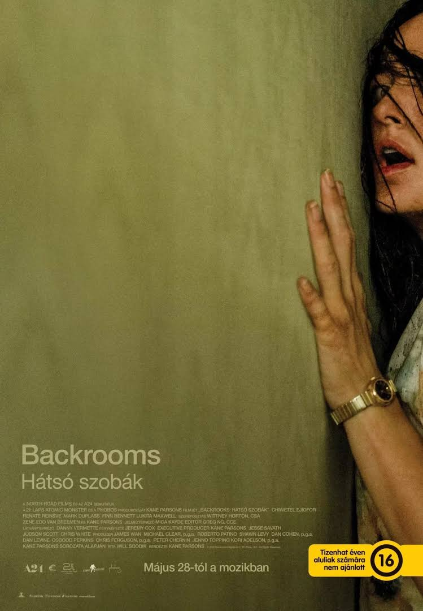
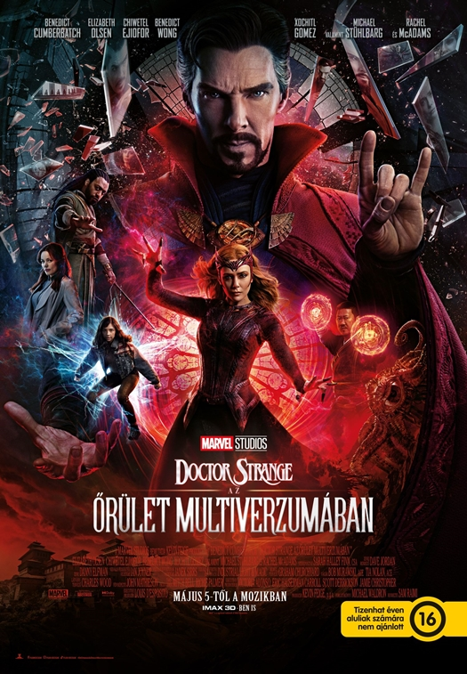
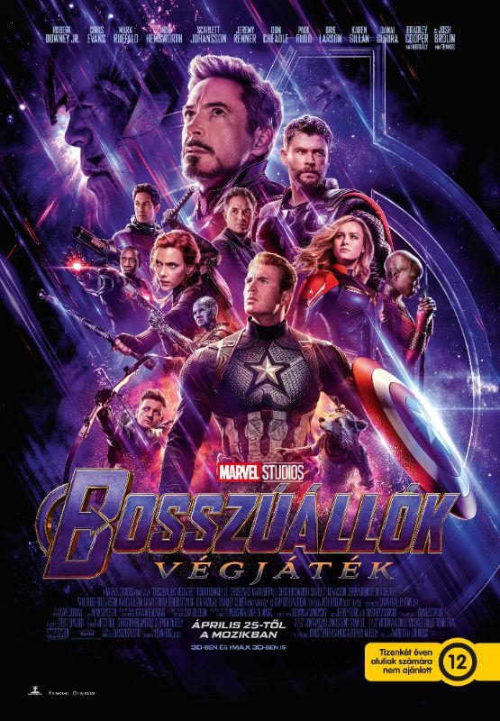
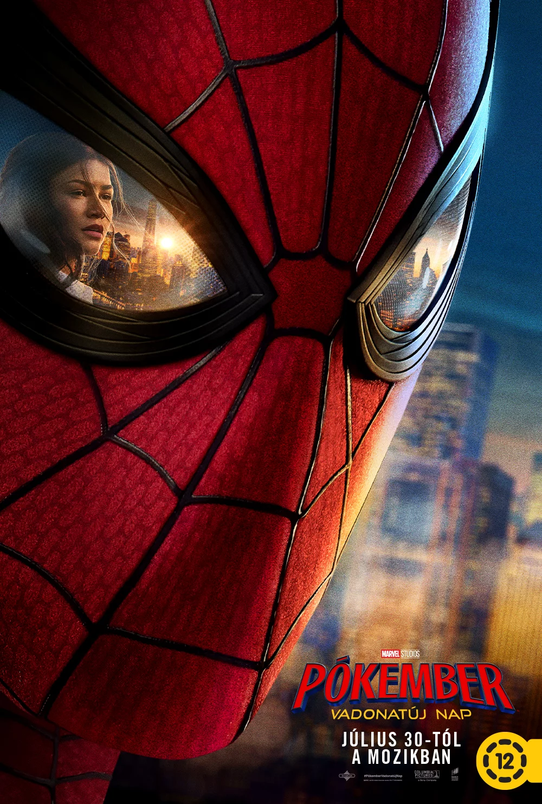

Interstellar
Az Interstellar Christopher Nolan 2014-ben bemutatott nagyszabású sci-fije, amely a közeli jövőben játszódik, amikor a Földet globális élelmiszerválság és porviharok sújtják. Az emberiség a kihalás szélén áll, ezért egy csapat kutató és pilóta – élükön a Matthew McConaughey által alakított Cooperrel – egy újonnan felfedezett féregjáraton keresztül indul útnak egy másik galaxisba, hogy új, lakható otthont keressenek a faj számára.
2014

The Amazing Digital Circus: Az utolsó felvonás
A The Amazing Digital Circus: The Last Act (A Csodálatos Digitális Cirkusz: Az utolsó felvonás) a népszerű animációs websorozat lezárása. Nem egy hagyományos epizód, hanem a sorozat utolsó két része, a 8. és a vadonatúj 9. epizód összevont, egész estés fináléja.A Gooseworx által készített történet lezárja a csapdába esett karakterek történetét, és bemutatja, mi történik a cirkuszi csapattal a végső kalandjuk során.
2026

Backrooms-Hátsószobák
Clark terapeutája, Dr. Mary Kline eleinte mentális összeomlásnak hiszi a férfi történeteit, ám amikor Clark nyomtalanul eltűnik, kénytelen maga is belépni a rejtélyes dimenzióba. A nő egy olyan világban találja magát, ahol az idő, az emlékek és az identitás összemosódnak, és ahol valami ismeretlen figyeli minden lépését.
2026

Doctor Strange az őrület multiverzumában
A Doctor Strange az őrület multiverzumában (eredeti címén Doctor Strange in the Multiverse of Madness) egy 2022-ben bemutatott amerikai szuperhősfilm, amelyet a kultikus rendező, Sam Raimi készített a Marvel Moziverzum (MCU) részeként. A történet a multiverzum sötét és veszélyes bugyraiba kalauzolja a nézőket.
2022

Bosszúállók: Végjáték
A Bosszúállók: Végjáték (Avengers: Endgame) a Marvel Moziverzum (MCU) 22. filmje, amely az addigi történetek monumentális lezárása és csúcspontja. A történet közvetlenül a Végtelen Háború után veszi fel a fonalat: Thanos egyetlen csettintéssel az univerzum élőlényeinek felét elpusztította. A megmaradt Bosszúállók összefognak, hogy visszaszerezzék az elhunytakat.
2019

Pókemer: Vadonatúj nap
A Pókember: Vadonatúj nap (Spider-Man: Brand New Day) egy 2026-ban bemutatott MCU-szuperhősfilm, amely négy évvel a Nincs hazaút eseményei után játszódik. A történetben Peter Parker a magányt választotta, és önként kitörölte magát az emberek emlékezetéből.
2026